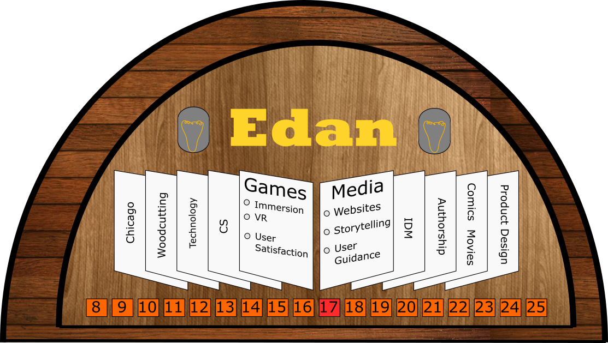

Classmate Discovery
By Bryce Summers
My Classmate - Bernard Edan McFevitt
Here is a visual Map of my peer named Edan. Please click on it to view a larger scale image.

- I used a Jukebox to represent Edan's ability to have friendships with people and as a bit of a retro object that keeps on being usable decade after decade. I also like how they have song lists that may be flipped like a book. This progression of song listing seemed like an interesting concept for Edan's progression through time. They are also rather smoothly designed, clean products, which match up with my naive conception of Edan's personal aesthetics.
- I used wood grains to represent Edan's fondness for woodworking.
- I show a clear divide between Edan's past, when he became interested in Computer Games and decided to study Comptuer Science, and his recent descision to switch to studying Integrated Digital Media.
-
I use the selector bottoms at the bottom to fix this mapping into time centered on the year 2017.
-
Edan has been invariant in his interest in users and I think that the JukeBox usability and purpose is to be direcctly manipulated and used by humans. I also put users on both sides of the divide, showing a change in perspective in the way users are served, rather than an abandonment of user centered design.
-
On the right side of the divide, I focus on various ideas surrounding Edan's desire to author and lead users through experiences, hinting at potential media mediums that he has listed on his mindmap and may be well suited to his future interests.